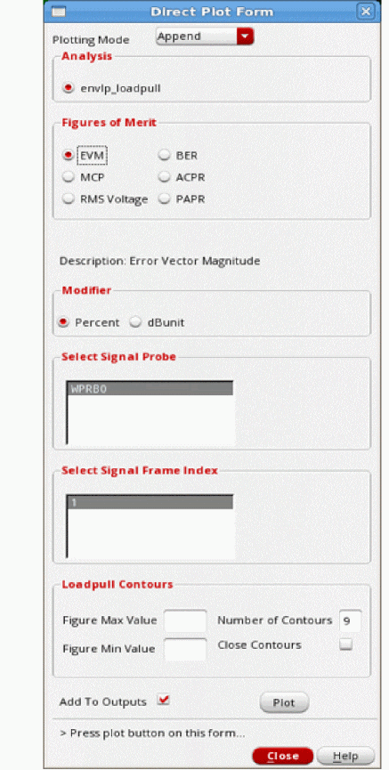
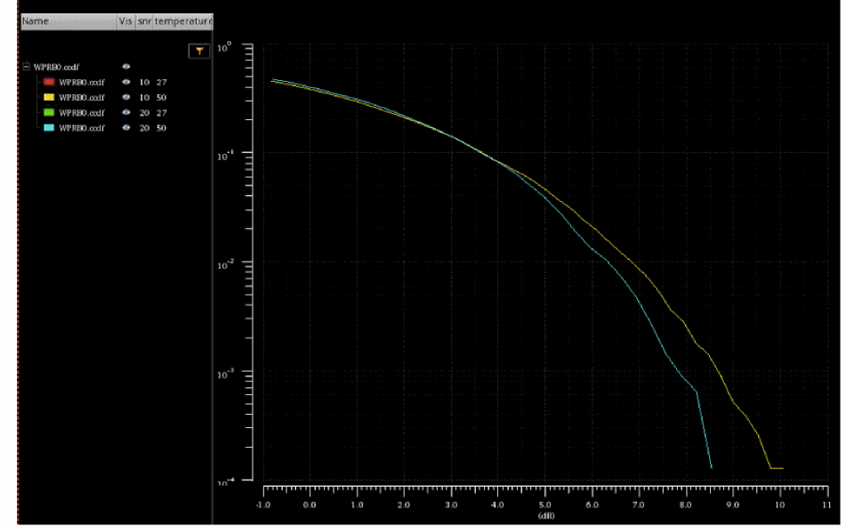
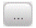
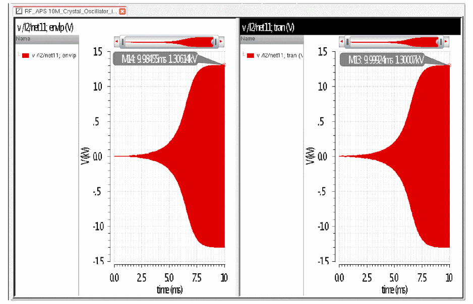

6
Envelope (ENVLP) Analysis
Envelope analysis is used instead of a transient analysis when there are fast things and slow things in the same circuit. The simulation term for this condition is called multi-rate simulation. In the transient, a large number of cycles of the fast signal must be simulated in order to capture the slow behavior in the circuit. Instead of simulating every fast cycle as in the transient, envelope skips many cycles of the fast signal because the change is very slow. Although many cycles are skipped, the result is almost as accurate as transient analysis.
The primary application for envelope analysis is for digital modulation of a high frequency carrier, or calculating the startup waveform of a high-Q oscillator.
Envelope can solve for one cycle of the RF carrier either by solving for the waveform when shooting is selected, or by using harmonic balance when harmonic balance is selected. For very nonlinear systems like polar modulation, use shooting. For relatively more linear circuits like and I/Q modulator and or power amplifier, use harmonic balance. Harmonic balance has the advantage of having two fast envelope modes that can dramatically speed up simulation.
Harmonic balance envelope has two different algorithms. The first is to simulate everything at the transistor level. The second, Level1, characterizes the circuit at the start of the simulation, and builds a behavioral model that is then run instead of the circuit. Level1 is useful for circuits that do not have memory effects. A level 2 choice is present in the ADE Explorer Choosing Analyses form, but when this is selected level 1 is actually used. You can see a message in CIW when the simulation starts.
Example
Consider a circuit with a wireless signal source, a behavioral PA, a wireless probe, and a 50 ohm resistor, as shown below. Multiple wireless probes are allowed. Connect a wireless probe at each point in the circuit you want to measure. The wireless source can be at any level in the hierarchy.
The wireless source from rfLib generates a fully compliant LTE signal.
The behavioral PA has 20dB of gain, and is slightly nonlinear.
Now start ADE Explorer, and open the envelope Choosing Analyses form. The form is blank.
Next, select the wireless mode, and type in the number of harmonics you want to simulate. Generally, level1 fast envelope is used because of the speed advantage compared to transistor-level simulation. Both modes work with wireless.
Now run the simulation from the ADE Explorer window. When you start the simulation for the first time, a variable W0_wfreq is introduced into the ADE variables list. This variable is used only when modulators are present in the design, and this variable should be used to set the LO frequency in the modulator. The actual frequency used in simulation is defined by the frequency range and channel number that is defined in the RF source.
Now open the Direct Plot Form. All the common measurements are available from the Direct Plot Form. For all wireless plots, select the wireless analysis choice at the top of the form. To plot the spectrum, select Spectrum, and then select the probe you want to plot.
Click Plot, and the spectrum is plotted. The spectral mask for the appropriate standard is also plotted. The channel power and the high and low acpr measurements are displayed using markers.
To plot the high and low acpr measurements at higher frequency offsets, select Customized ACPR in the Direct Plot Form and specify the number of channels in the Number of Adjacent Channels field, as shown below.
Click Plot. The high and low acpr measurements at higher frequency offsets are displayed using markers.
To plot the constellation diagram, select Constellation, and then either the Percent or dB value for the EVM measurement. Now select either the measured constellation, or the ideal constellation fitted to the actual datapoints, and click Plot.
The constellation is displayed along with the EVM calculation. For the 802.11n standard, EVM for the data, pilot, or the weighted average of both is available.
To plot the subframe by subframe EVM, select Measure, and then select the <probe name> .evm.
The EVM subframe by subframe is displayed.
Loadpull
For a loadpull simulation, use a port for the load.
-
Select the Loadpull checkbox.

- Click the Select button on the right of the grayed out Load Instance field.
-
In the schematic, select the load port.
The instance name is entered in the Load Instance field. Direct entry by typing is not allowed for this field. - Click the Variable button on the right of the rho (Z) field.
-
In the Select Design Variable window, select the variable you entered in ADE Explorer.
This variable will be used to set the value of the reflection coefficient in the port. - Specify a sweep range and set the spacing.
- Click OK.
- Click the Variable button on the right of the phi (Z) field. This sets the angle of the reflection coefficient.
- In the Select Design Variable window, select the second variable you entered and specify the sweep limits.
-
Click OK.
The Choosing Analyses form is updated. -
Specify the system resistance in the Z0 field.
The Choosing Analyses form should appear similar to the one below.
- When completed, click OK and run the simulation in ADE Explorer.
-
In ADE Explorer, select Results - Direct Plot - Main Form.
The Direct Plot Form is displayed as shown below.
 -
Click Plot with the settings as shown in the image above.
A smith chart is plotted.
CCDF Post Processing
You can perform complementary cumulative distribution post processing (CCDF) for each probe placed in the circuit. Consider the following example design:
- Run a fast envlp wireless simulation.
-
Open the Direct Plot Form.
CCDF will be listed in the Function group box if there is anenvlp.ccdf.envlpfile in your.rawdirectory. -
Select the CCDF function.Selected Probe (sig) to plot lists the wireless probes relative to CCDF.
.ccdf,.avgPower, and.peakPowerprobe types are included in this list. -
Select the required probe and click Plot or Add To Outputs.
The plot results will be based on the type of simulation that was run and the probe type that is selected.
For non-sweep simulations
If a non-sweep simulation is run and the.ccdfprobe type is selected in the Direct Plot Form, a curve will be plotted as shown below:If a non-sweep simulation is run and the.avgPoweror.peakPowerprobe type is selected in the Direct Plot Form, there will be no option to plot the results because they are scalar values. Select the Add to Outputs checkbox to add these probes to the outputs as shown below:After adding the expressions to Outputs Setup tab, open the Results tab and click the Re-evaluate button to update the values in the results table.
For sweep simulations
Consider a simulation is run with the following sweep settings:
snr1=10,snr2=20;temp1=27,temp2=50
For this simulation, you can plot results for all the probe types using the Direct Plot Form.
Example of CCDF plot:Example of average power plot:Example of peak power plot:
Envelope Principles
Harmonic Balance
Use harmonic balance if the circuit has sinusoidal waveforms and is fairly linear. This is true for circuits with sinusoidal waveforms operating below compression. If polar modulation is used where the circuit is operated in a very nonlinear mode, then shooting is suggested.
Basic Principles
Consider an amplifier that is being driven by an unmodulated source. Because of the finite bandwidth of the system, there is some startup behavior, and then the amplifier reaches steady-state.
The time-zero time point is the initial transient solution, which is a DC analysis that observes all the time-zero values for all the waveforms in the system.
The waveform above is an actual starting waveform for harmonic balance. Vertical markers have been placed at 400nsec intervals, which correspond to one cycle of 2.5GHz.
When the system becomes predictable with a low order polynomial, harmonic balance envelope begins to skip cycles. The number of cycles it skips depends on whether fixed or adaptive timestep control is selected. For fixed timestep control, the next strobing point is simulated. For adaptive timestep control, the number of cycles skipped depends on the curvature of the envelope. For an unmodulated sinusoid, conceptually, the cycle skipping could continue to grow to the end of the simulation because the same waveform repeats over and over again.
Note that for an accurate PSD and ACPR measurement, the data needs to be strobed at the time interval in the original I and Q modulation file. In harmonic balance, there does not need to be an integer number of skipped cycles.
If that delta-time was 8.3333333333nsec, to get an integer number of skipped cycles, the carrier frequency needs to be an integer multiple of 120MHz. Note that when the carrier is 2.4GHz, this is a multiple of 20. Because of the integer multiple, the envelope time-domain waveform shows a horizontal line between the cycles of simulation.
When the carrier is 2.41GHz, there is a small offset from the actual period of the carrier frequency. This causes a sinusoidal line to appear between the cycles that are simulated. This is because the periods do not exactly align.
Note that harmonic balance envelope is not a series of steady-state harmonic balance simulations. It is a hybrid of transient and harmonic balance.
Consider an amplifier followed by a diode peak detector shown below.
At time zero, there is no signal, so the filtered output at the net out2 starts at zero. The resistors and capacitors cause the signal to ramp up in an exponential fashion.
If the envelope simulation had been steady-state at each time point, the voltage at the net out2 would have been constant and non-zero from the start.
For systems that can have complex behavior, make sure that adaptive time step control is selected. This allows the number of skipped cycles to be dynamic along with the variations in the envelope signal. If this system had been an analog AGC circuit, the feedback might have resulted in overshooting and ringing. This behavior could accurately be determined by using adaptive timestep control.
Envelope-Transient Simulation
In envelope-transient analysis, a circuit is driven by one or more modulated carriers of the form:
Subject to the modulated carrier excitation, circuit waveforms can be represented by sums of slowly modulated carriers harmonically related to w0. Every voltage, charge, and current looks like:
Envelope-transient analysis solves for the harmonic modulations (complex envelopes) Vn(t) at each node. Because the envelope bandwidths are typically much lower than the carrier frequency, the sampling rates are correspondingly lower and the simulations more efficient than traditional transient analysis.
Under modulated carrier excitation, circuit equations take the form:
where V(t) is the vector of nodal harmonic envelopes. The remaining terms represent the quasi-static contributions to the envelope circuit equations, equivalent to a repeated solution of steady-state circuit equations by means of harmonic balance, one for each envelope time step ti, where the sources are treated as sinusoids having a time-varying complex amplitude X(ti).
The dynamic term describes the contribution of reactive elements to the envelope circuit equations. Taking a linear capacitor as an example, it becomes:
This term vanishes unless the modulation is relatively wideband and/or the capacitance is relatively large.
Transistor Level V/s Fast Envelope
Transistor-level (envelope-transient) simulation solves for all of the circuit equations rigorously, taking dynamic effects into account. The cost of transistor-level envelope simulation is virtually the same as a sweep of M harmonic balance simulations, where M is the number of envelope time samples. Transistor-level envelope analysis is usually more efficient than transient simulation for modulated inputs, but it remains computationally very expensive when the number of the time samples is large, as is usually the case for today's communication standards.
The fast envelope method relies on two basic assumptions to accelerate simulation speed:
- The modulation is relatively slow and the contribution of the dynamic term mentioned earlier is small or negligible.
- There is a single-modulated carrier at the input (or, equivalently, a pair of baseband I/Q channels).
With those assumptions and considering the output signal as a modulated carrier of the form,
the output envelope is a function of the input signal's amplitude and phase:
Two forms of f(A(t) ,(t)) are observed in practice:
The Passband Model
In the passband model the nonlinear behavior is dependent on the magnitude of the input signal only.
G(A) describes the circuit's amplitude and phase compression characteristic. It is extracted efficiently by treating the input signal as a sinusoid and sweeping its amplitude over the expected range of the complex envelope's magnitude. At runtime, the output is obtained by table look-up and interpolation, which are very efficient operations. Since only a handful of points are required to build the look-up table, typically around 10, the runtime cost of the passband fast envelope model is equivalent to approximately 10 harmonic balance simulations. For a typical modulation source consisting of thousands, or tens of thousands of samples, the speed-up offered by fast envelope is much higher than the transistor-level methods.
The Baseband Model
The most frequent application of the passband model is in PA design where the input,

may be viewed as a pair of I/Q channels upconverted by an ideal quadrature modulator. For most other situations, especially when the circuit contains transistor-level modulators, the output is a function of both the I and Q channels (or, equivalently, the modulated carrier's amplitude and phase), and therefore, requires a 2D sweep for proper characterization.
SpectreRF now includes a highly efficient and accurate baseband fast envelope model, which typically requires approximately 100 or fewer harmonic balance sweep points for proper characterization.
Fast envelope models are extracted from swept harmonic balance simulations performed over a range of the input envelope magnitude (for the passband model) and phase (for the baseband model). The number of sweep points has a significant impact on both the simulation accuracy and on speed of model extraction. In the present implementation, by default, the number of sweep points is set at 7 for the magnitude and (in baseband model only) 12 for the phase. This is a controllable parameter set by the options sweepmethod, Magnitude Points, and Phase Points in the envelope options form. Choosing Fine for sweepmethod will run 10 magnitude points and 12 phase points. Setting userdefined allows you to set both the number of magnitude and phase points for the characterization phase of the fast envelope extraction. Adaptive is a work in progress.
Power Scaling in Baseband Mode
In passband mode, the power specified by the wsource instance parameter Power represents the average power dissipated in a matched load. In baseband mode, Power represents the sum of the average power dissipated in matched load resistors in the I and Q channels. More precisely, assuming that the power available in the I and Q channels is the same, the sum of power in the I/Q loads is:
Here, v(t) is the voltage across either of the load resistors. Then,
Using P=10 mW and R=50 as examples, the rms voltage should be 500 mV.
WFreq
Notice that the fundamental frequency is specified as W0_wfreq. The variable, termed wfreq, is entered on your behalf directly from the wsource instance name. In general, its format is <wsource instance name>_wfreq.
wfreq is a reserved variable, which represents the carrier frequency of the source. Each standard has channel numbers and band numbers (if applicable) that define the carrier frequency that is currently in use.
Instead of calculating carrier frequencies manually, you can directly access the frequency computed by the source by means of wfreq.
wfreq is available in the analysis form but you can also use it to set values of the instance parameters.
When you click OK, ADE Explorer will automatically add a variable called <wsource instance name>_wfreq to the list of Design Variables and set it to 1G. The wireless engine overrides it with the correct value internally and issues an info message in the log to report the actual value used during simulation. The actual value of the carrier frequency is reported in the Spectre output window.
When do I use Passband or Baseband?
Use the following simple rules to choose the model:
- If the input is a pair of baseband I/Q signals upconverted by a transistor-level (or otherwise non-ideal) modulator, use the baseband model.
- If the input is a modulated carrier (typically a case for PA modeling), use the passband model. An uncommon exception to this rule is the modeling of demodulators. Since the output of a demodulator depends both on the real and imaginary parts of the input signal, use the baseband method to model it.
Fast Envelope Noise
Optionally, in the presence of random noise, the output is modeled as:
The random noise signal, N(t), is extracted by one of the two methods: linear noise analysis around the DC operating point, or periodic noise analysis computed around a sinusoidal input (or the equivalent DC representation in the case of baseband input) given by:
In both cases, the noise analysis is performed over the modulation bandwidth to extract the noise spectrum and calculate its complex-envelope representation. The periodic noise representation takes more time to extract than the linear model but is recommended as more rigorous and accurate than the linear approximation.
To perform envelope noise simulation:
-
Open the Envelope Choosing Analyses form, as shown below.
- Select the Wireless option.
- Specify the number of harmonics that you want to simulate in the Number of Harmonics field.
-
Select level1 for Fast envlp mode.
Here, level1 refers to linear noise and level2 refers to pnoise, as explained above. - Select the Noise check box.
- Leave the Sweep type to the default value of Log.
- Leave the Noise method to the default value of level2.
-
Set the start frequency at least 4 decades smaller than the bandwidth of the modulation but not equal to zero.
The stop frequency is set automatically based on the bandwidth of the modulation. - Click Apply.
Wireless Mode in Envelope Analysis
Starting with the 13.1 release of SpectreRF, RFIC designers can evaluate system-level performance metrics in an integrated, automated, and easy-to-use simulation flow enabled by the new wireless analysis option.
In wireless analysis, standards-compliant modulation sources are applied to the DUT and measurement probes calculate system-level performance metrics. The sources and the probes are implemented by two new Spectre primitives: wsource and wprobe. Based on the familiar SpectreRF envelope-following algorithms, the wireless engine works with wsource and wprobe to automate the analysis setup and simulation parameters. The sources and the probes are standard-aware, resulting in a powerful and streamlined flow - though rich in standard support and complete in system-level simulation coverage, it is designed from the ground up for everyday use by RFIC designers.
Supported Standards
The 19.1 release supports Bluetooth, DMR, LTE, NR, ZigBee, Smart Meter (802.15.4g),802.11a, 802.11b, 802.11n, 802.11p, 802.11ac, 802.11ad, 802.11ah, 802.11ax, and 802.11af standards.
Wireless Analysis Vs. Traditional Envelope Following
Wireless analysis, based on traditional envelope-following analysis, has the advantage of automated set-up and post processing using the new wsource and wprobe components. Advanced modeling options, such as fast envelope, are supported as well. Wireless analysis produces, among other features, the traditional envlp dataset, making it compatible with all of the pre-existing Direct Plot capabilities and post-processing functionality.
Wireless analysis offers a number of additional benefits beyond the traditional envelope following:
- Parametric modulation sources. Traditional envelope-following relies on generic PWL sources of fixed frame structure, sampling rate, bit patterns, and modulation options. In contrast, wsources are fully parametrized according to the specified communications standard.
- Automated simulation setup and control. Wireless analysis works with standards-aware wsources, which help determine all of the relevant simulation parameters – sampling rates, stop times, strobe options, and carrier frequencies, as dictated by the communications standard. A key benefit of automated simulation control is that the designer is now less likely to make common setup mistakes which affect simulation and measurement accuracy. Wireless analysis is fully supported within ADE Explorer behind an easy-to-use and familiar-looking analysis setup form.
- Efficient post-processing. Most of the wireless analysis post processing is performed at runtime by wprobes. Much like the sources, wprobes are aware of the communications standard specifications. They output all of the standard-specific system-level metrics, such as EVM, BER, and spectrum masks directly to the output database. System-level metrics are available directly from the Direct Plot form, without manual post processing and in compliance with the modulation format and communications standard.
Limitation of Wireless Analysis
Wireless analysis works in conjunction with Cadence-supplied wsources and wprobes. Custom PWL sources are not supported in this mode. Traditional envelope-following can still be used with custom PWL sources as a fully supported simulation option.
Many wireless simulations are done using level 1 fast envelope. Level 1 fast envelope allows noise to be simulated but does not take memory effects into account. Although you can use wireless simulation (without level 1 fast envelope) for circuits with memory effects, it is recommended that you use transistor-level envelope simulation for such circuits.
Shooting
Wireless mode is not available when shooting is selected.
Shooting is suggested if polar modulation is used where the circuit is operated in a nonlinear mode. Use harmonic balance if the circuit has sinusoidal waveforms and is fairly linear. This is true for circuits with sinusoidal waveforms operating below compression.
Consider an amplifier that is being driven by an unmodulated source. Because of the finite bandwidth of the system, there is some startup behavior, and then the amplifier reaches steady-state.
The time-zero time point is the initial transient solution, which is a DC analysis that observes all the time-zero values for all the waveforms in the system. At this point, the only thing that is known is the time-zero value, so the projected ending point of the first period is the starting point.
The waveform above is an actual starting waveform for shooting. Vertical markers have been placed at 400nsec intervals, which correspond to one cycle of 2.5GHz.
Note that at the end of the first period, the ending point misses the starting point by a lot. This error between the predicted and actual ending point is used to control the simulation. In this case, the error is large, so the transient continues for another period. The beginning and ending points of the first cycle allow a prediction of a ramp as the ending point for the second cycle.
When the system becomes predictable with a low order polynomial, shooting envelope begins to skip cycles. First, it will skip one period, which is done twice in a row in the above example. Then it skips 2 periods, and then it skips 4 periods. For an unmodulated sinusoid, conceptually, the cycle doubling could continue to the end of the simulation because the same waveform repeats over and over again.
Shooting has the limitation that only an integer number of cycles can be skipped. This is because the starting and ending voltages need to be predictable, which happens only when an integer number of cycles is skipped.
When digital modulation is present, the number of skipped cycles depends on the curvature of the envelope. When the envelope has little curvature, many cycles can be skipped. When the envelope has a large curvature, not many cycles can be skipped.
In order to maintain accuracy, adaptive timestep needs to be used with shooting to allow the envelope algorithm to maintain the accuracy of the simulation.
Note that for an accurate PSD and ACPR measurement, the data needs to be strobed at the time interval in the original I and Q modulation file. For maximum accuracy, the carrier frequency needs to be an integer multiple of the reciprocal of the delta-T in the I and Q modulation file.
If that delta-time was 8.3333333333nsec, the carrier needs to be an integer multiple of 120MHz. Note that when the carrier is 2.4GHz, this is a multiple of 20. The sampled carrier cycles are exactly aligned with the data in the I and Q modulation file.
When the carrier is 2.45GHz, because of the limitation of skipping an integer number of cycles, the timing of the actual points in the envelope is not an integer multiple of 8.3333nsec. This causes small interpolation errors in the result due to the time mismatch.
Shooting envelope is a general-purpose extension of the transient and is useful for calculating the startup behavior of many circuits that have very long time constants and very short time constants in the same circuit. An example is analog AGC (Automatic Gain Control).
As an example, consider an amplifier that has a diode peak detector after the amplifier.
The capacitor voltage starts at zero because there is no signal at time zero, and then has an exponential charging curve set by the resistors and capacitor in the peak detector.
ADE Implementation and Detailed Envelope Settings for a Driven Circuit
First a modulation source is needed. Your choice of modulation source depends on whether you will be using wireless mode or using your own I and Q modulation files. Cadence provides three components in rfLib called wlan11n, lte, or ZigBee, which have modulated signals for the three standards. If you use one of these sources, then add wprobes in your circuit to make the measurements.
If you are using your own I and Q modulation files, you will need to get a piecewise linear I and Q modulation file from your system design group. These files will have a constant delta-time between the points. This delta-time should be 1/(channel bandwidth*6) or smaller if you need an ACPR measurement, and 1/(channel bandwidth*10) or smaller if you need a second adjacent channel power ratio calculation. This is required to meet the Nyquist criteria for the modulation.
To create the modulated RF signal from the I and Q modulation files, either a port component from analogLib or ACPR_Source from rfLib can be used. If the port is used, you need to scale the amplitude of the RF signal to achieve the correct power at the output of the port. If you use the rfVsource, it will read the I and Q data files, and the power in dBm can be set directly on the source. Note that this power will be achieved when you simulate to exactly the end time in the I and Q modulation files. The properties list for the port is shown below.
The properties list for the ACPR source is shown below.
The raised cosine filter should not be needed for most simulations.
Setting up the Envelope Analysis in ADE Explorer: Wireless Mode
If you are using wireless mode, all you have to do is place a wireless source in the schematic, add wireless probes in the schematic at every point you want to make a measurement, select wireless mode in ADE Explorer, and define a reasonable number of harmonics for your system. After you run the envelope analysis, direct plot functions are available for all the common measurements. See the example at the beginning of this chapter for details.
Setting up the Envelope Analysis in ADE Explorer: Using your own I and Q Files
- Everything starts with the I and Q files you are working with.
-
Calculate 1/time difference in these files. If you are using shooting, consider making the carrier frequency in the design an integer multiple of this frequency. This will reduce the numerical noise floor of the simulation. For harmonic balance, it is not needed unless you are trying to determine the phase of the signal based on the time-domain result. The carrier frequency has been set in ADE Explorer variable frf shown below.
- Now select Analysis - Choose or click the Choosing Analyses icon on the right side of the ADE Explorer window.
-
Select envlp. The ENVLP Choosing Analyses form is displayed.
-
Now click the Start ACPR Wizard button.
The ACPR wizard is displayed.
- From the Clock Name drop-down list, select the name that is in the Frequency name 1 or 2 property that sets the carrier frequency in the circuit. If you are using ACPR_source, this name is fc.
- Select Net or Differential net, depending on your design.
- Click Select on the right of the Net field and then select the output net(s) in the schematic.
- If you are working on a Qualcomm standard, select Power Density. Otherwise, select Power.
- If you are working on an 802.11n standard, select the standard from the Channel Definitions drop-down list. The rest of the fields in the form will have starting values. Please see the discussion for Symbol Start, Window Size, and Repetitions below.
- If you are working on another standard, select Custom.
- Type the channel bandwidth in the Main Channel Width field.
-
In the Adjacent frequencies section select low.
The edit fields below this section become active. - Type the frequency limits for the first low adjacent channel for the ACPR calculation. Note that these frequencies are referenced to the center of the main channel. For frequencies on the low side of the main channel, the numbers will be negative.
-
Select Change.
This moves the contents of the edit field up into the list. - In a similar manner, select high, enter the frequency range, and click Change.
- If you have second adjacent specifications, add the name and frequency limits in the edit field above, and then click Add.
-
Set Symbol Start(Sec) field to the time when you want the Fourier transform to begin. In many I and Q files, there is a time delay caused by digital filtering. The start time for the frequency response calculation needs to be after that delay time. If you are unsure, simulate the I and Q file in a piecewise-linear source in the transient analysis, and watch for the time that the output becomes non-zero, and pick a time slightly later than that.
-
Set the strobe period to the delta-time in the I and Q modulation file. If you are unsure, view the file in a text editor, and look at the left entry of the second line. The first line should have a left entry of zero (seconds) The second entry left entry (in seconds) should be entered in the strobe period field. The right entry is the voltage at the time in the left column.When you enter a strobe period, the ACPR wizard will update the Symbol Start field so that it is an integer multiple of the strobe period.The Fourier transform used to calculate the frequency response of the circuit is inherently noisy. To make the spectrum less noisy, the psd function is used. The psd function splits the time that is simulated into smaller pieces, which allows multiple shorter time sequences to be considered individually. A fourier transform is performed on all the pieces individually, and then the power of all the first harmonics is averaged. This is done for the rest of the harmonics also. Because of the averaging, the noise is reduced. Because a shorter time exists in each piece, the frequency of the first harmonic goes up. In the psd, this reduces the resolution (the number of frequency points analyzed in the spectrum). Generally, a trade-off is needed between the number of pieces, the length of the simulation, and the noise in the psd calculation.
- Window size is the number of delta-times in the I and Q input files you want to include for the spectral calculation. This needs to be a power of two. Generally, this is in the range of 256 to 8192.
- Specify repetitions as a power of 2. This will run as many windows sizes as you specify.
-
The Symbol Stop(Sec) is calculated based on the symbol start, window size, and repetitions fields. Make sure that the data in your I and Q modulation file has entries to at least this time. View the I and Q modulation file, and look at the left entry (the time) in the last line of the file to make sure that ending time is larger than the Symbol Stop(Sec) time in the ACPR wizard.
The resolution bandwidth is calculated based on the entries for strobe period and window size. It is the frequency resolution of the Fourier transform of the output signal. - Because the data bits in the modulation are random, a Fourier transform window function needs to be selected. There are advantages and disadvantages to all window functions. The Hanning window is a reasonable window if the window function is not specified by the standard. Check with your system designer to find out his or her preference.
-
When you are done, click OK.
In the Choosing Analyses form for ENVLP, the Stop Time field is populated. The Time Step Control is also set to fixed and the Step Period field has the entry that you specified for the strobing interval in the ACPR wizard. A number of envelope options are also set to provide the output from the simulator at the times needed for the FFT-based frequency response calculation.
-
Either type the frequency of the carrier, the number of harms, and the oversample factor, or select names, and set the desired number of harmonics.
- If you have square waves in your circuit, use an oversample factor if you choose harmonic balance, or select shooting. If you decide to use harmonic balance, you need relatively more harmonics. In this case, also set oversample factor to two to eight. The more non-sinusoidal the waveform is, the higher oversample factor should be.
- If you have a frequency divider in your circuit, specify the divider ratio in the Freqdivide Ratio field.
- For the Time Step Control field, select fixed or adaptive for Harmonic Balance and adaptive for Shooting.
- For most ACPR measurements, select conservative.
-
Select the fast envelope level you desire. This is available only when harmonic balance is chosen for the engine. When the fast envelope mode is set to off (default), normal envelope is performed at the transistor level. Harmonic Balance or Shooting is used to solve for a subset of the RF cycles. Level 1 is available for circuits where acceleration is desired, and the circuit has little memory effect Level1 requires defining the I and Q sources in the circuit, and the nodes to save data for in the circuit.
-
Select whether you want to have all the harmonics on the output along with the time-domain waveform or not. The default in fast envelope is to not calculate the time-domain output waveform and higher harmonics in order to save time. If you take the default, only the harmonic number you specify in the Output harmonic field is calculated. If you want all the harmonics and/or the time-domain waveform, select the yes check box to the right of Output time-domain waveform and all harmonics.
If you are using the port component with an I and Q modulation file, that port should be selected for both the I and Q source. If you are using the ACPR_source, descend-read into the ACPR_source schematic. The I source is highlighted in red below, and the Q source is highlighted in blue below.
The mathematical model can be saved by setting the writeenv option to a file name. After this, the model file can be read in and used directly by setting the readenv option. You cannot set both options at the same time.
Now run the simulation. When the simulation completes, the psd (frequency response) plots in the waveform window.
The unit for the psd is dBW (dB with respect to 1 Watt).
The ACPR is shown under the Maestro tab of the ADE Explorer window.
Plotting EVM
EVM is integrated into the Direct Plot Form for the 802.11 standards only.
- In ADE Explorer, select Results - Direct Plot - Main Form.
- Select envlp results.
- Select EVM.
- Select the first harmonic.
- Select OFDM.
- If you are using rfVsource, select the standard you are using in rfVsource.
- Set the symbol start to 0 (zero) except for 802.11a, which is 4u.
-
Select the output net in the circuit.
The EVM for both the data channels and the control channels is displayed.
Plotting Main Channel Power
Plotting main channel power is a bit less straightforward than plotting EVM.
- In ADE Explorer, select Results - Direct Plot - Main Form.
- Select envlp results.
- Select Main Channel Power.
- Select the first harmonic.
- Type the bandwidth of the main channel.
- Open the envelope Choosing Analyses form.
- Open the ACPR wizard.
- In the ACPR wizard, triple-click the entry in the Symbol Start field.
- In the Direct Plot Form, click the middle mouse button in the From field. The entry from the ACPR wizard should transfer.
- In a similar manner, transfer the Strobe Period, Window Size, and Repetitions entries.
-
Select the same window function that was used in the ACPR wizard.
-
Select the output net in the schematic. The power calculation is displayed with a marker in the display tool.
Plotting the Envelope Voltage Versus Time
- In the ADE Explorer, select Results - Direct Plot - Main Form.
- Select envlp results.
- Select Voltage.
- Select harmonic time.
- Select the appropriate modifier.
-
Select the first harmonic.
-
Select the net in the schematic.
-
Zoom in if you would like. The symbols are turned on in the display below so the strobe points are visible.
Plotting the Time-Domain Waveform
This is available in fast envelope level1 and level2 only when yes is selected for Output time-domain waveform and all harmonics.
- In ADE Explorer, select Results - Direct Plot - Main Form.
- Select envlp results.
- Select Voltage.
-
Select time.
-
Select the net in the schematic.
-
Zoom in, if desired.
The line that is visible between the spikes can be used to determine the phase of the signal as time increases only if the carrier frequency is an integer multiple of 1/delta-T in the I and Q modulation file. When the line is near the middle, the phase is zero or 180 degrees. When the line is near the top, the phase is 90 degrees. When the line is near the bottom, the phase is 270 degrees.
When you zoom in further, you can see the individual carrier cycles that envelope is calculating.
To see the full transient output, set the transtrobeperiod option to the period of the carrier divided by an integer. The choppiness of the waveform and the runtime is controlled by the number of time points in the waveform that gets calculated. This is available in harmonic balance transistor-level simulation only. An example is shown below.
When zoomed in, the waveform is continuous.
Frequency Modulated Input Signals
Frequency modulated signals can be simulated in transistor-level envelope simulations only. When frequency modulation is used, the period of the waveform varies as a function of the modulation that is applied. Conventional envelope simulation cannot be used because the fundamental assumption is that the period is constant and defined by the carrier signal.
To allow frequency modulation, a new option has been added that allows the period to be solved at each carrier cycle that is simulated.
To simulate a frequency modulated signal, follow these steps:
-
Set up the frequency modulated source. In this example, a simple sinusoidal modulated port is used. If you use this element, remember that the modulation index is in percent.
- Set up for a simulation using the envlp Choosing Analyses form and the ACPR wizard as shown before. Choose a standard with a bandwidth that is slightly larger than the FM modulation frequency. This will set the simulation to produce data at the time interval needed for the psd calculation. See the previous section for the steps that are needed.
- Click Options in the envelope Choosing Analyses form.
-
Select the Misc tab.
- Select the check box to the left of the number 1 for the fmspeedup option.
- Type the modulation frequency in the modulationbw field.
- Click OK.
-
In the envelope Choosing Analyses form, type in the center frequency in the Fundamental Frequency field.
- Set harmonics and oversample as required. For more information, see the harmonic balance section at the beginning of Chapter 3.
- Choose an accuracy level.
- Set the Fast envlp mode to off.
- Click OK and run the simulation.
-
When the simulation completes, the psd will plot.
-
If you want to see a spectral plot, set the line style to spectral. To do this, select the legend at the upper left. Right-click and select Type from the context menu. In the popup window, select Spectral. The line style will change to a more familiar plot.

-
When you zoom in to the individual spikes, you will see multiple spikes. There will be either one or two phantom spikes on each side of the output sideband because of the DFT sample window used in the psd function. The number of spikes and the relative amplitude depend on the actual window function you selected. Remember that these spikes are not real. They are produced because of the window function itself.
Commonly Used Options
Options are provided to control the specific behavior of the simulation. This next section discusses the effect of the options in the options form for envelope. They are listed as they appear on the Options form.
Convergence Tab
ic (Shooting and Harmonic Balance)
Initial conditions can be specified graphically by selecting Simulation - Convergence Aids - Initial Condition in the ADE Explorer. Initial conditions can also be specified from a file using the readic property. Capacitors and inductors have the initial condition properties in the property list for the component. For capacitors, this is an initial voltage across the capacitor, and for inductors, it is an initial current in the inductor. The default is to observe all the initial conditions in the DC analysis that is used as the time-zero time point. The initial conditions force a voltage or current to be present in the time-zero solution. The initial conditions are released for the rest of the transient simulation in the tstab interval. The ic option controls the initial conditions that should be observed in the time-zero time point. all is the default. dev means that only the initial conditions on capacitors and inductors are observed. node means that only the initial conditions on a node are observed. dc means that no initial conditions are observed. The example below shows node.
Skipdc (Shooting and Harmonic Balance)
In some cases, the time-zero time point DC analysis does not converge. Instead of stopping the simulation, skipdc allows the envelope simulation to continue using an assumed solution for the time-zero time point. The default is no and a DC analysis is run to get the initial time point. yes means skip the DC solution, and proceed directly to the envelope simulation. All the nodes with initial conditions specified start at the initial condition value. Nodes with batteries start at the battery voltage. Nodes with no initial conditions start at zero volts. For skipdc=yes, the signal sources start as specified immediately in the envelope simulation. The example below shows the skipdc option set to no. The default is yes.
Readic (Shooting and Harmonic Balance)
This specifies an ascii file that contains two columns to be read as initial conditions. The left column is the node name. The right column is the voltage value. If the entry does not start with / (slash), the entry is located in the netlist directory. To find the netlist directory, select Setup- Simulator/Directory/Host in ADE Explorer. Look in the Project Directory field for the location of the simulation directory. Navigate to that directory and then to the <Circuit Name>/spectre/<schematic or config>/netlist directory. You can also click () and browse to the directory. There is no default.
Readns (Shooting and Harmonic Balance)
This specifies an ascii file with the same format as an ic file that is used as nodesets for the time-zero DC solution. Nodesets do not force a voltage to be held for the time-zero solution. Instead, they are a way of speeding up the time-zero calculation. As a suggestion, set the write option and the readns option to the same filename. The write option writes the time-zero solution to a file. When this is used as a starting point, many fewer iterations are needed for the time-zero point to converge. There is no default.
Cmin (Shooting and Harmonic Balance)
cmin adds a capacitor to ground from all nodes in the circuit to ground with the value specified in the cmin field. Note that if 1 is specified, a 1 farad capacitor is added from every node to ground in the circuit. Do not forget the multiplier suffix. Values from 1f to 100f are typically used to allow convergence. The default is 0.
Maxiters (Shooting and Harmonic Balance)
The transient analysis for tstab (for both shooting and hb) and shooting interval iterate to a solution at each time point. maxiters specifies the maximum number of iterations before the timestep is cut for another try at convergence. In some cases, model parameters can cause discontinuities in the device current or capacitance. If this occurs, the change in the circuit condition can be large enough to require more than the five iterations that are the default. Specifying maxiters in the 40 to 100 range usually allows the simulator to converge in spite of the discontinuity.
restart (Shooting and Harmonic Balance)
This option is used when a sweep is run. If restart is no, the time-zero time point does not restart from scratch. It restarts from the time-zero solution of the previous sweep value. yes forces a new time-zero solution to be re-run from scratch every time. The default is no.
envmaxiters (Shooting and Harmonic Balance)
The solution for each period of the carrier is an iterative solution. envmaxiters sets the maximum number of iterations that are allowed before the number of periods skipped is reduced. The default is three iterations for shooting and 40 for harmonic balance.
Accuracy Tab
method (tstab and shooting window for shooting, tstab only for Harmonic Balance)
This option controls the integration method for the shooting window. Note that in harmonic balance, the method option only applies in the tstab interval because the harmonic balance envelope solver works in the frequency domain. The default value for the shooting window is determined by the setting of errpreset. For moderate and conservative, the default is gear2only. For liberal it is traponly. Generally, gear2only is preferred because of the absence of trapezoidal ringing inherent in the trap (trapezoidal) method. Note that liberal is not recommended for RF simulation. When you simulate high Q oscillators, set method to traponly. This is needed because gear2only slightly numerically damps the oscillations.
envmethod (Shooting and Harmonic Balance)
This option controls the integration method for the part of the envelope analysis during the skipped cycles. In this part of the simulation, numerical integration still needs to be performed to get correct answers. For example, if there is a long time constant, the behavior on the node with the long time constant needs to be integrated even during the skipped cycles. envmethod controls this. The default is gear2only except for autonomous envelope (oscillators) where the numerical damping of gear2only is unacceptable. In this case, the default is traponly, which neither damps nor exaggerates the oscillations.
relref (Shooting (tstab and shooting window) and Harmonic Balance (tstab only))
In the order of most to least accurate, the relref settings are pointlocal, alllocal, sigglobal, allglobal. The default for moderate is sigglobal and for conservative it is alllocal. relref is used in the transient analysis in the tstab interval for both shooting and harmonic balance and in the shooting window for shooting. relref is used in hb only for the tstab interval because the solver works in the frequency domain. In some cases, the timestep can collapse to near zero. The symptom is that in the Spectre output window, the percent done number remains the same for many reporting intervals. The solution to this is to set relref to sigglobal, which is slightly less accurate. Another possibility is to use the lteminstep option as described in the AdditionalParams option of the Misc tab.
lteratio ((tstab and shooting window for shooting) and Harmonic Balance (tstab only))
lteratio is a multiplier for the allowable numerical integration error in the tstab interval and the shooting window. The default is 3.5 or 10 depending on the setting of reltol and errpreset. See Controlling Accuracy for details. lteratio cannot be set smaller than 1.0 and is normally between 3.5 and 100. In some cases, the timestep collapses to near zero and setting relref to sigglobal does not fix the problem. In this case, there might be a model discontinuity. To test this, disable numerical integration timestep control by setting lteratio to 1e9. Note that this is an extreme measure not to be used under normal simulations. If the timestep still collapses, there is a discontinuity in one of the models in the circuit. This could be a device model or a Verilog-A model. If it is necessary to set lteratio very large to get the simulation to complete, you must also set maxstep small enough to preserve the accuracy of the simulation. Note that lteminstep might also be used to treat this condition. See AdditionalParams in the Misc tab to see how to use this option.
envlteratio (Shooting and Harmonic Balance)
envlteratio is a multiplier for the allowable numerical integration error in the numerical integration that occurs in the part of the waveform where cycles are skipped. The default is 0.35 for conservative and 3.5 for moderate. Liberal is not recommended.
steadyratio (shooting Only)
The maximum mismatch between the beginning and ending values for the voltages and currents in the shooting window is determined by the convergence criteria * lteratio * steadyratio. The default is 0.1 for moderate, and 1.0 for conservative.
sweepmethod
When fast envelope is used, a series of harmonic balance simulations are run. The amplitude is swept over a range of values present in the I and Q modulation files. When the baseband model is used in fast envelope, the phase also needs to be swept. The sweepmethod option controls the density of the sweep points. The default is coarse, where 7 amplitude and 12 phase points are used. This is sufficient for most simulations. Fine uses 10 amplitude points and 16 phase points. Userdefined allows you to specify the number for both magnitude and phase points. Adaptive is a work in progress.
Magnitude points
When sweepmethod is set to userdefined, Magnitude points specifies the number of different amplitude points to use in the characterization phase of fast envelope.
Phase points
When sweepmethod is set to userdefined, and there is a baseband source in the circuit, this option controls the number of phase points to use in the characterization phase of fast envelope.
Output Tab
annotate
Annotate (Shooting and Harmonic Balance)
This option controls the level of detail in the output log. The default is status. The level of detail increases as you move to the right.
Save (Shooting and Harmonic Balance)
The default is allpub. This saves all the public voltages at all levels of the hierarchy in the schematic. It excludes the internal nodes of the device models. all adds the internal nodes of all the devices. lvl saves all the nodes including the internal nodes of the devices through the level of hierarchy set in the nestlvl option. lvlpub is like lvl, but it does not save the internal nodes of the devices. selected saves only the nodes that are specifically saved. In ADE Explorer, this is accomplished using the Outputs - To Be Saved - Select On Schematic menu option and then selecting the nodes and terminals specifically in the schematic. At the netlist level, this is accomplished by using a save statement with a list of names to be saved.
Nestlvl (Shooting and Harmonic Balance)
If save is set to lvl or lvlpub, this controls the maximum level of hierarchy to be saved. If nestlvl is 1, only the top level is saved. If nestlvl is 2, the top level and the next level down are saved. The value for nestlvl can be any integer. There is no default for nestlvl.
Compression (Shooting and Harmonic Balance)
outputtype (Shooting and Harmonic Balance)
This option is rarely used. It controls which simulation results to save. Normally, both time and frequency domain data is saved. Envelope saves the time-domain data only. Spectrum saves just the frequency-domain data. The default is to save both time and frequency-domain data. Note that in fast envelope, you need to select the yes check box to the right of Output time-domain waveform and all harmonics in order to calculate time-domain output.
strobeperiod (Shooting and Harmonic Balance)
This option specifies the envelope time in seconds to force cycles of the carrier to be simulated. Shooting will round this time to an integer number of periods of the carrier. This is used to force data at the times needed for the psd calculation. There is no default value.
transtrobeperiod (Shooting and Harmonic Balance)
Normally, the time-domain waveform is a cycle of carrier followed by many skipped cycles, followed by another cycle of simulation. Since there is no waveform between the last point for the first cycle and the first point of the second cycle, the waveform tool just connects those points together with a straight line. The waveform can be made into a continuous waveform using the transtrobeperiod option. This should be set to an integer fraction of one period of the carrier frequency. When this is set, Spectre still skips cycles, but it also creates an interpolated, continuous waveform with time points at the transtrobeperiod interval. In the example below, 20 points are set for one period of the carrier at 2.5G.
Spectre does take expressions, as shown above. There is no default value for transtrobeperiod.
Here is a comparison of the 2 waveforms.
The red waveform is the normal waveform. The vertical spikes in the red waveform are the individual periods of the carrier that are normally calculated. When transtrobeperiod is set, the waveform becomes continuous, as shown in blue. A closer view is shown below.

Reuse Tab
Write (Shooting and Harmonic Balance)
write specifies a filename to which the DC solution used as the first time point be written to. If the name does not start with slash (/), the file is written in the netlist directory. To determine the netlist directory location, select Setup - Simulator/Directory/Host in ADE Explorer. The Project Directory field lists the location of the simulation directory. From this directory, the netlist directory is in <Circuit Name>/<simulator name>/<schematic or config>/netlist. There is no default value.
Writefinal (Shooting Only)
writefinal writes the final envelope time point from the last period of the envelope analysis (not the final time point of the tstab interval) to the filename specified. See the description for write for the location. There is no default value.
Swapfile (Shooting Only)
This option is not currently implemented.
Saveclock (Shooting and Harmonic Balance)
This option is not currently implemented.
Saveperiod (Shooting and Harmonic Balance)
This option is not currently implemented.
Savetime (Shooting and Harmonic Balance)
This option is not currently implemented.
Savefile (Shooting and Harmonic Balance)
This option is not currently implemented.
Recover (Shooting and Harmonic Balance)
This option is not currently implemented.
Writeenv
When fast envelope is used, the behavioral model can be written to a file and reused. Writeenv specifies the filename to save the behavioral model for fast envelope in.
Readenv
When fast envelope is used, the behavioral model can be written to a file and reused. Readenv specifies the file to read back in instead of running the characterization from scratch.
Misc Tab
start (Shooting and Harmonic Balance)
This option is rarely used. It defines the starting time for the envelope simulation. The default is 0.
outputstart (Shooting and Harmonic Balance)
This option is rarely used. This defines the simulation time to begin to save data to the output file. The default is to start writing data at time 0.
tstab (Shooting and Harmonic Balance)
This is seldom used in envelope simulation. This specifies a simulation time for the transient analysis to run before starting the envelope simulation. The default is to run 3 periods of the carrier signal.
modulationbw (Shooting and Harmonic Balance)
modulationbw and envmaxstep accomplish the same thing, which is to define a maximum time interval to skip between carrier cycles that are simulated. When modulationbw is set, at least eight periods of the carrier are simulated in the time period of one cycle of the frequency modulationbw. modulationbw does not force data at equally spaced intervals, like envstrobeperiod does. Instead, it sets a a maximum delta-time for skipping cycles. There is no default.
maxstep (Shooting: tstab and waveform calculation. Harmonic balance: tstab interval only)
This option is rarely used. This sets the maximum delta-time for the shooting waveform in each cycle of the carrier. The default forces at least 20 time points for moderate, and 50 time points for conservative. It also is used in the transient analysis in the tstab interval.
envmaxstep (Shooting and Harmonic Balance)
envmaxstep and modulationbw accomplish the same thing, which is to define a maximum time interval to skip between carrier cycles that are simulated. envmaxstep sets the maximum time between periods of the carrier that can be skipped. envmaxstep does not force datapoints at regularly spaced intervals. Instead, it sets a a maximum delta-time for skipping cycles. The default forces at least 25 periods to be simulated when moderate is selected, and 50 when conservative is selected.
pactimes (Shooting and Harmonic Balance)
During the transistor-level envelope simulation, one or more of the carrier periods that are simulated can be used as the nonlinear operating point for the small-signal pac, pxf, pnoise, or psp analyses. pactimes is a list of times separated by a space for the large-signal envelope solution that should be used for the small-signal analyses. The default is to not use any points for the small-signal analyses.
pacnames (Shooting and Harmonic Balance)
This option is used in combination with pactimes. Specify a list of the small-signal analyses pac, pxf, pnoise, and/or psp in this option field, and these analyses will be run at the times specified in pactimes. The default is to not run any small-signal analyses.
When this option has a list of small-signal analyses, the corresponding pac, pxf, pnoise, and psp analyses must also be set up and enabled.
fmspeedup (Shooting and Harmonic Balance)
This option allows the period of the carrier cycle to vary because of frequency modulation. When fmspeedup is set to the default of 0, the period of the carrier is not allowed to vary. When it is set to 1, the period is allowed to vary.
AdditionalParams (Shooting and Harmonic Balance)
This is a field for <option_name>=value statements. Multiple <option_name>=value statements are allowed with a space between them. Generally, this is used to unlock the beta features, however, there is one case where this field might be useful for an option that is not available in the GUI.
In some cases, in the tstab interval, the timestep collapses to near zero. The symptom is that the percent complete stays at the same value for many reporting intervals. In this case, there might be a discontinuity in one of the models.
In transient simulation, two things can reduce the timestep; having too much numerical integration error or taking too many iterations at a single timestep can cause the timestep to be cut. Spectre does not report what is causing the timestep to become small. One way to eliminate the possibility of numerical integration error (which is called local truncation error in the simulator) as the cause of reducing the timestep is to set lteratio to 1e9. The disadvantage of this is that it disables the normal method of timestep control, therefore, maxstep must be set to maintain accuracy.
Another way to accomplish this is to set lteminstep to a value of about the stop time divided by 1e5. This allows the normal method of timestep control, but if for some reason the numerical integration error wants to cut the timestep too small, the error is ignored. lteminstep is the way to specify this. To do this in ADE Explorer, type lteminstep=<Stop_Time>/1e5. If you use lteratio=1e9, or if you set lteminstep and you still have very small timesteps, try increasing maxiters in the Convergence tab to between 40 and 100. When lteratio or lteminstep is set and you still have timestep problems, there is likely a discontinuity in either a device model or in a Verilog-A model. An example is shown below.
Autonomous ENVLP Analysis (Oscillators)
Autonomous envelope is useful for simulating the startup behavior of high Q oscillators, and for simulating the frequency pulling and/or pushing effects caused by random data being applied to a system. In autonomous envelope, the period and amplitude of each cycle of the oscillator that is simulated needs to be solved.
In general, harmonic balance is suggested for LC oscillators, and shooting should be used for ring oscillators. Crystal oscillators should use harmonic balance.
The only additional requirement in the Choosing Analyses form for oscillators is the requirement to select the check box for oscillators, and specify a node or pair of nodes that has the oscillator signal on it. If the osc initial condition check box is set to linear, the nodes must be in the resonator of the oscillator. Although not a requirement, it is recommended that you use adaptive timestep control, and set the modulationbw (modulation bandwidth) option to the frequency of the oscillator divided by the Q of the oscillator.
Example: Startup behavior of a crystal oscillator
First, add an isource, set to Source type to pulse, and connect it to the resonator as highlighted above. The properties list is shown below.
- Set the Zero value to 0 (zero). The pulse starts at the zero value. With zero amps, the isource is a perfect open, so it does not load the circuit.
-
Set the One value to a current that starts the oscillator, but does not drive it too hard at the start. You will need to experiment with this value using the transient. In the waveform window below, the junction of the inductor and capacitor in the crystal motional equivalent circuit is plotted. This voltage will get quite large because of the high Q. Change the One value so that one to ten volts peak is generated at this node at the start of the transient simulation, and no huge transients are generated.
- Set the Rise time and Fall time to about 1/10th to 1/100th of the period. This is a 10MHz crystal oscillator. In this case, 1/100th of the period was used.
- Set the Pulse width so that half a period is generated by the pulse. Half the period of 10M is 50nsec, so the total of Rise time, Fall time, and Pulse width is 50nsec.
- Do not make an entry in the Period of waveform property.
The effect of these entries is to set up a single current pulse to start the oscillator.
Now, set up the envelope Choosing Analyses form.
- Select the appropriate engine. For LC and crystal oscillators, select Harmonic Balance. For ring oscillators select Shooting.
- Set an appropriate Stop Time for your simulation. The time chosen will depend on the Q of the oscillator. About five times the Q periods need to be simulated.
- Set the Fundamental frequency, Number of Harmonics, and Oversample Factor as needed for your simulation. See the discussion about setting harmonics and oversample factor in Chapter 3: Harmonic Balance.
- Select adaptive Time Step Control. This allows the simulator to place the periods of oscillator simulation at the appropriate place.
- Enable the check box next to the Oscillator Property, and specify a node inside the resonator for the oscillator node(s).
- Set Osc initial condition to default. This ensures that the oscillator starts up as a result of the current pulse applied to the resonator.
- Select moderate accuracy. In virtually every case, this is accurate enough.
- Fast envlp mode must be set to off. Fast envelope is not available for oscillators.
Options are not required, but are suggested. Click Options at the bottom of the Choosing Analyses form.
Set the modulationbw (modulation bandwidth) property to the period divided by the Q of the oscillator. Expressions are allowed by Spectre.
Now run the simulation. Below is a comparison of the runtimes for the envelope analysis and for the transient analysis. Note that the runtime is much shorter for the envelope analysis.
Now use the Direct Plot Form to plot the waveform. In ADE Explorer, select Results - Direct Pot - Main Form.
- Select envlp results.
- Select Voltage.
- Select Net or Differential Nets.
- Select time.
-
Select a net in the schematic. The waveform is displayed.

The waveforms above are the envelope results on the left, and the transient results on the right. The results are almost identical for both, and envelope takes 16.4 seconds versus 2125.4 seconds for the transient on the same machine.
Common Problems With Oscillator Startup
In some cases, the oscillator will have a hard time starting up. You can recognize this by looking at the waveform in the resonator of the oscillator. Normally, the junction of the capacitor and the inductor in the crystal equivalent circuit will have voltages in the order of KiloVolts peak at steady-state. When you see the ragged startup waveforms, as shown below, set a fixed timestep with about 15 to 100 periods as the step interval.
Spectre takes expressions in the entries, so it makes the period calculation easy.
The example above sets 20 periods of 10MHz as the step interval.
Also, set the following analysis options:
Set the method and envmethod options to traponly. trap does not damp or emphasize the oscillations of the oscillator. The default is gear2only, which slightly damps the oscillations. Also, set relref to alllocal. This is needed because of the mix of very large amplitude signals on the resonator with much smaller oscillations in the rest of the circuit.
Also, in some circuits, the initial pulse that is used to start the oscillator can cause large transients at the beginning of the envelope analysis and cause problems with the determination of the frequency at the beginning of the simulation. To determine if this is the case, look at the startup waveform at the beginning of the simulation.
Note that the waveform is still settling at the beginning of the simulation. In this case, four periods are being simulated instead of one. You can see the frequency that is being used in the output log.
Setting tstab in the Misc tab can cause the simulation to start robustly.
The waveform is much smoother with tstab set.
Examples
There are wireless examples provided with the release. To access the examples:
-
Navigate to
<mmsim_install_directory>/tools.<platform>/spectre/examples/SpectreRF_workshop. -
Copy the
rfworkshop.tar.Zfile to a directory where you have write access, and extract the file. -
Navigate to the directory
/spectrerf_workshop/doc.
In this directory, you will find directions for the wireless workshop.
Return to top